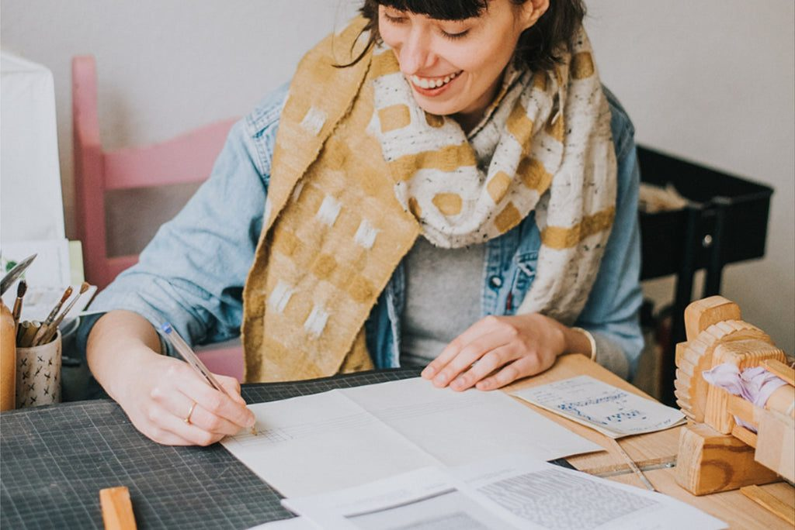
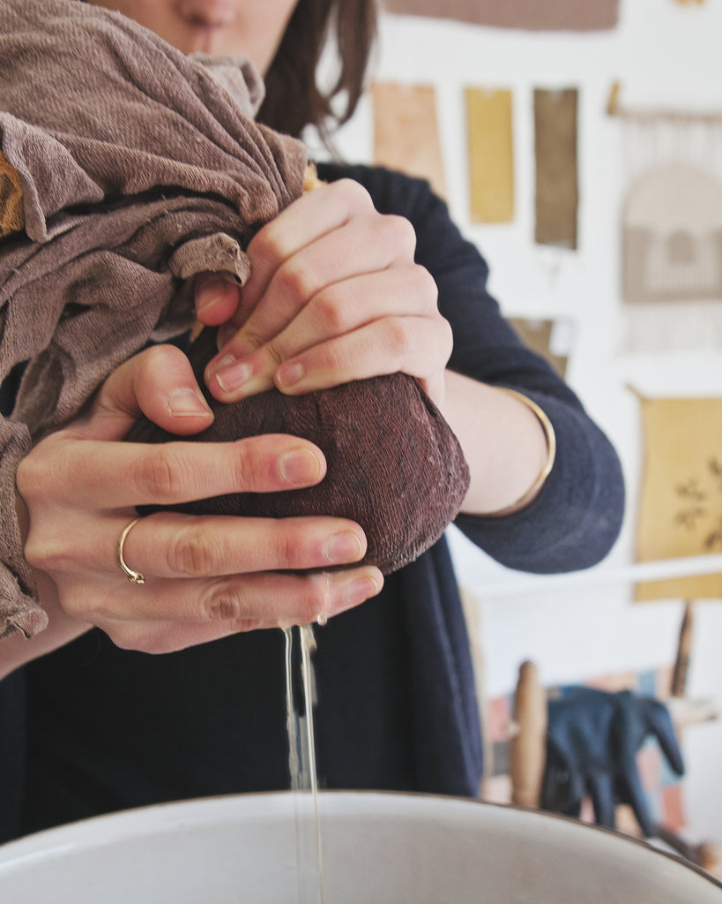
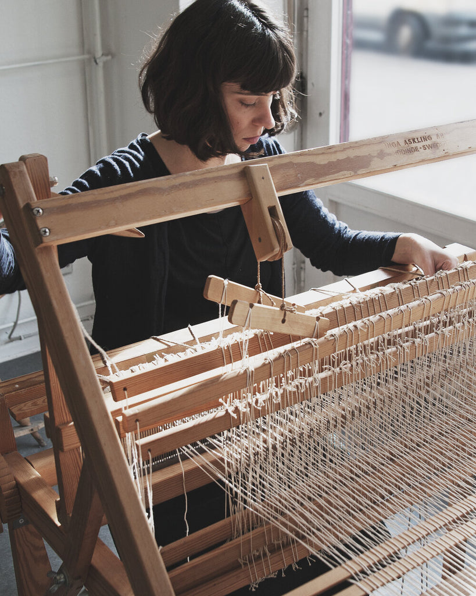
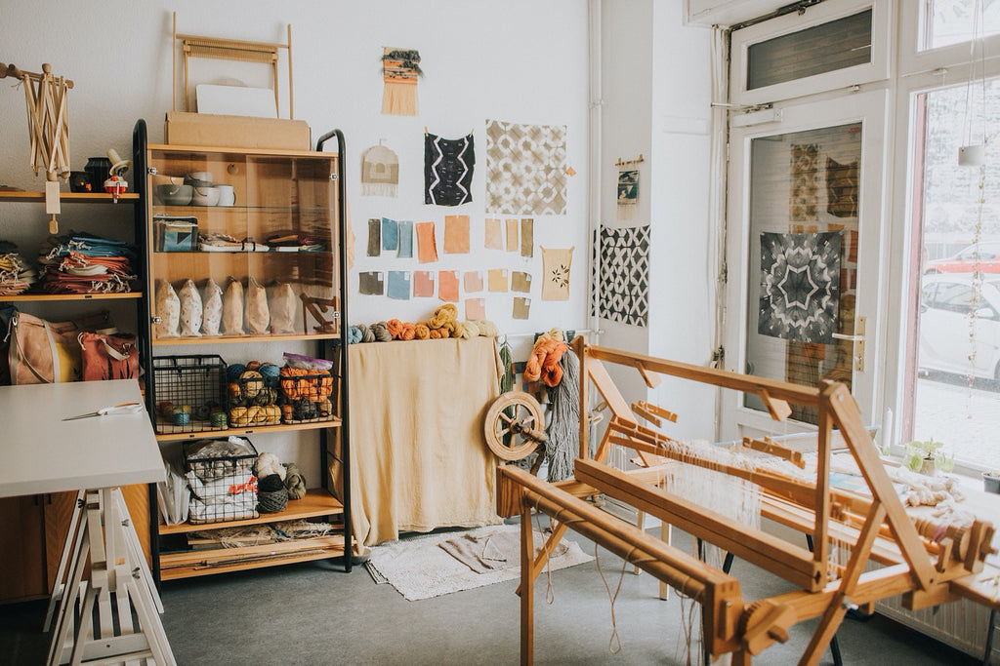

Hi,I'm Ania.— founder, Kaliko
About · Ania Grzeszek
Architect by training.
Natural dyer by practice.
I spent five years working as an architect before starting Kaliko in 2016 as a side project. Within a year, I had left architecture for textiles. Both are slow work built around decisions about material and form.
Kaliko grew from a small line of hand-dyed goods into a studio practice: commissions for fashion brands, installations for galleries, and one-off pieces for interiors. Always with natural fibers, plant-based color, and in small batches.
Alongside Kaliko I make art, with textiles as my primary medium.



a brief history of kaliko
Kaliko started in 2016 in my kitchen in Berlin. I was testing plants from the park near my flat, making a first set of hand-dyed pieces, and sharing the process online while I taught myself the craft through experiments (and a lot of reading).
People who found me online began writing with commissions, and from there came the first wholesale orders. That's when I decided to commit to Kaliko and grow it into a proper brand with a developing line of products.
In 2018 I moved into my first studio in Neukölln and began offering workshops alongside the product work. Around the same time I started working with other brands, running workshops for their teams, creating brand activations, collaborating on art pieces, and developing samples.
In 2019 I upgraded to a bigger space in Wedding: a dedicated studio with a full dye kitchen. By 2020 Kaliko reached its busiest stretch, with products, wholesale, workshops, and brand work all running at full capacity.
By 2023, running a product business was leaving less and less room for the kind of work I wanted to do. I decided to wind down the product side and focus on commissions and project work instead. It turned out it's not easy to stop the running train. The transition took over two years. By the end of 2025, Kaliko finally stopped offering products, wholesale orders, and regular public workshops.
Today, Kaliko focuses on commissions and collaborations with brands, designers, and artists I genuinely want to work with. The values that made me start Kaliko are still the ones driving the work: staying creative, making space to experiment, and educating people about the things that matter to me along the way.
I set up Kaliko as a reflection of what I wanted to see more of in the world. Four focus areas have been at the core of the work since the start:
Empowering textile lovers
- Years of workshops teaching traditional cloth-making techniques
- Curated line of craft supplies and DIY kits (part of now-retired product range)
- A public library of tutorials, plant portraits and natural-dye references for anyone who wants to learn
Taking care of the planet
- Certified natural fibers only — materials good for the planet and the people who wear them
- Plant-based, non-toxic color instead of petrochemical dye
- Steady advocacy for healthier alternatives to the conventional textile industry
Working locally
- All materials sourced from EU-based small businesses
- During the product years, every Kaliko piece was finished by local female freelancers
- The whole practice rooted in the local economy
Reuse & reduce
- Textile offcuts reused for art projects
- 100% bio-degradable packaging for anything that ships
- Environmental footprint deliberately kept minimal
What the studio stands for
01 —
Shared knowledge.
Understanding where things come from, what they're made of, who makes them, and what it takes to produce them changes how people relate to what they buy. Learning the craft is what turns awareness into a choice.
02 —
Natural material.
Care shows up in the material. Natural fibers and plant-based color are a way of looking after the land they come from, the people who grow and finish them, and the ones who wear them.
03 —
Regional economy.
Working close to home keeps the carbon footprint modest, builds a supply chain based on personal relationships, and supports textile businesses finding their feet locally again. Proximity matters.
04 —
Doing no harm.
Every production has an impact. The studio's interest is in mapping where those impacts land and testing the least harmful solutions. Kaliko is an ongoing case study in how far a considered practice can go even on a small scale.